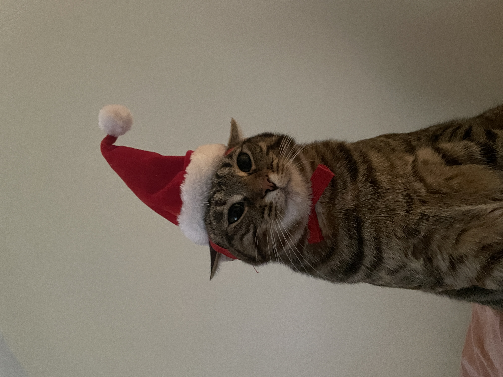
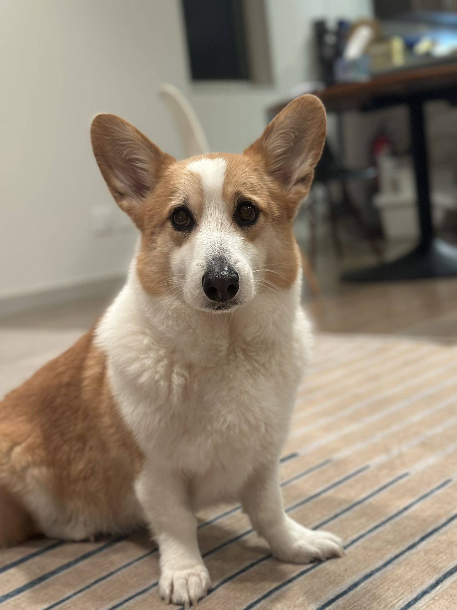
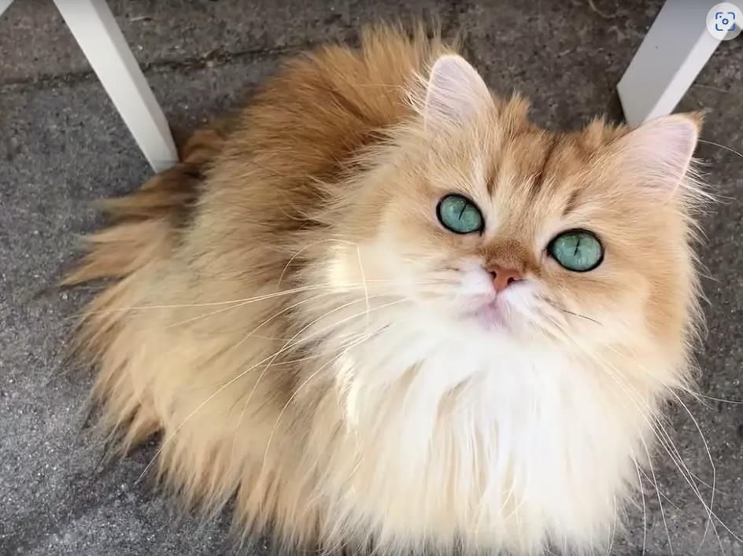
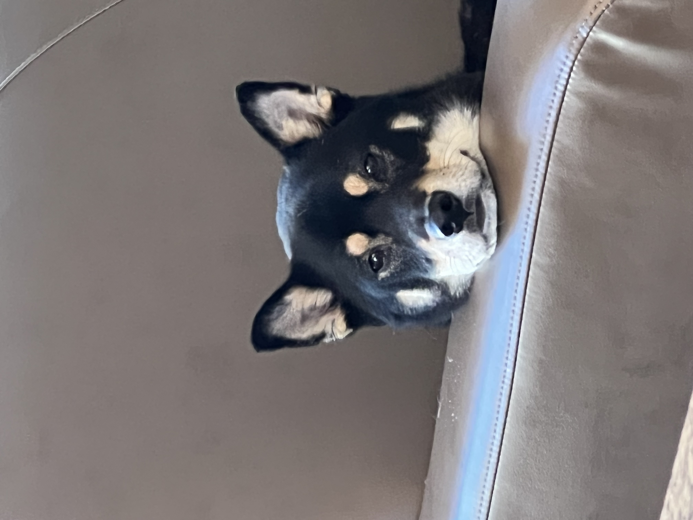

Pets
Explore the types of pets our users own and find out more about the type of pet you'd like to have one day! If you already have a pet, please post your little one and share with the community!
Bacon Q Dog

Bacon Q. Dog is a 9yr old labradoodle. He prefers to spend his days lounging among the three different beds/couches that his family has gifted him. He enjoys a walk or two around the neighborhood, as long as he can pretend that he doesn't see any of the other animals to avoid the embarrassment of not wanting to admit he has no wolf-like skills in chasing them.
At night just as the rest of the family is ready to relax, Bacon suddenly wants to release all of his energy. He will place his toys on a mini couch and frantically drag the couch around, giving his toys "a ride." There is also a lot of rolling. Lots and lots of rolling.
Photo Gallery


Likes
- Belly rubs
- Playing tug-of-war
- Sneaking onto the couch
Maple
Maple is a 2 year old tabby cat with brown stripes. She is very playful and friendly but also loves lounging in the sun! Maple is a huge fan of treats - she has even learned how to open doors to steal some extra treats.
Sometimes Maple has boundless energy. At night, she gets the zoomies after eating her final meal of the day. It usually takes her another hour to settle down before she can take a long nap.
Photo Gallery
Likes
- Belly rubs
- treats
- Stretching her paws
Cody
Cody is a 7yr old Pembroke Corgi. He was born in Cavalier Farms, Seattle. He prefers to spend his days lounging on the bean bag. Every day, he enjoys two walks around the neighborhood and likes to make friends with other doggie friends. If lucky enough, he might see the cyclist, but he is not allowed to give chase.
Cody loves traveling. He enjoys walking on the beach and taking sun naps. But he hates cold weather. He would like to stay at home lounging by the fireplace in winter.
Photo Gallery
Likes
- Traveling
- Lounging
- Tennis balls
Smoothie
Smoothie has been dubbed the "world's most photogenic cat", and her emerald eyes and golden fur have even inspired a mural in New Zealand. Smoothie also has an aptly-named brother named Milkshake, and the two are often featured together across social media platforms.
She became an internet sensation with 2.3 million followers on her smoothiethecat Instagram account.
Photo Gallery
Likes
- Playing
- Sunshines
- Posing for pictures
Chako
With a coat as dark as midnight but eyes as bright as stars, he seemed to embody both the mystery and the exuberance of life itself. Agile and playful, he danced around the park as if the grass were his personal stage, captivating everyone with his vivacity.
Yet, when at home, Chako transformed into a zen master. He would curl up on his favorite rug, eyes half-closed in contemplation, as if solving the great puzzles of the universe. Both spirited and serene, Mochi was a living testament to the richness of dualities, teaching his human companions that one could be many things all at once.
Photo Gallery

Likes
- Sleeping
- Playing
- Eating